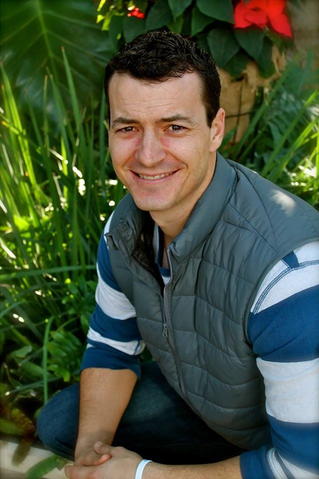

Ryan is a native Houstonian. Around age 8 he asked Jesus to come into his life and save him from the consequences of his sins. By the time he graduated from Jersey Village High School in 1997 he had been through many ups and downs in his journey with Jesus, but the Lord was faithful and merciful and set his life on a path that has been nothing short of amazing. He attended the University of Tulsa to play football and get his education. There he met the most beautiful girl on campus - his future wife, Ashlie. After graduating and spending 2 years in Colorado the Lord opened a door for them to move back to Houston and begin serving at a great church in Sugar Land. They moved there in June of 2004 to serve at Sugar Creek Baptist in the student ministry. He was able to pursue his education and received his Masters from Southwestern Seminary in May of 2009. Then in 2010 they were blessed by the birth of their first son, Peyton. In March of 2012 God opened another door for the Cook's to come serve at Kingsland Baptist. In May 2013 they were blessed with their second son, Gracen. Finally in April of 2016 God gave them a beautiful daughter, Adeline. In what free time he has, Ryan likes to work out and try to play golf – the key word being "try."
 Joe LandiJoe and his family moved from Illinois to join the Kingsland team in January of 2016. He surrendered his life to Jesus in 2004 while going into his senior year at college. After graduating with a Bachelor’s Degree in Business Management and working in the business world for 5 years, Joe was hired from within his church to be the Director of Student Ministries where he served for over 6 years. He is currently working on a Master’s of Divinity from Liberty University. Joe is passionate about equipping, encouraging and empowering students to be Gospel-advancing, life-long leaders as they fall in love with and follow Jesus Christ. He believes in mentoring and discipling students into a deeper relationship with Jesus while discovering their gifts for ministry and their ability to influence others for the Gospel. Joe and his beautiful bride, Meghan, have been married since 2006 and they have a wonderful son named Logan (2010) and a precious daughter named Rylea (2016). Joe enjoys his family, friends, laughing, anything to do with sports and working out.
Chris KincaidChris joined the KSM Staff in December of 2012. He is passionate about student discipleship and wants to point students to the Gospel at every moment. Chris became a Christian at the age of 6. He grew up in the Katy area and is a graduate of Morton Ranch High School. He attended Texas A&M University where he majored in Sociology and minored in Business. He is currently attending Southwestern Theological Seminary pursuing a Masters in Divinity. In March of 2016 he married his beautiful wife Kelley. In his spare time Chris enjoys hanging out with his wife, watching Aggie sports, going to coffee shops, and playing any sport that involves a ball.
Lindsay CrisantiLindsay joined the KSM team in June of 2014. She has a deep desire to disciple young women to understand the life found in Father, Jesus, and Holy Spirit and the freedom found in their identity as daughters of God. She has great a passion for loving people through missions and justice, both local and abroad. Lindsay grew up in Katy and graduated from Katy High School. She became a Christian in 2010, while in College Station. She graduated from Texas A&M in 2012 with a degree in Communication. She completed a 10 month residency program in the Dallas,TX area prior to joining the KSM staff. Lindsay loves to run, read, write, eat good food, drink good coffee, and spend time with loved ones, friends and family alike.